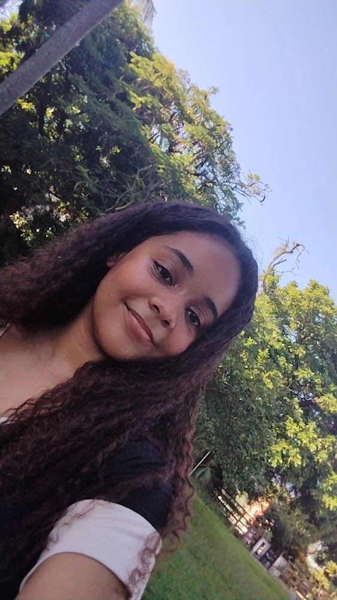

Quem eu sou é uma pergunta complexa, pois a identidade humana é multifacetada e em constante evolução. Sou uma pessoa única, com uma combinação única de experiências, personalidade e valores. Minha identidade é moldada pelas minhas crenças, histórico familiar, influências culturais e interações sociais. Sou um indivíduo com sonhos, aspirações e desafios, que busca encontrar significado e propósito em minha jornada pela vida.